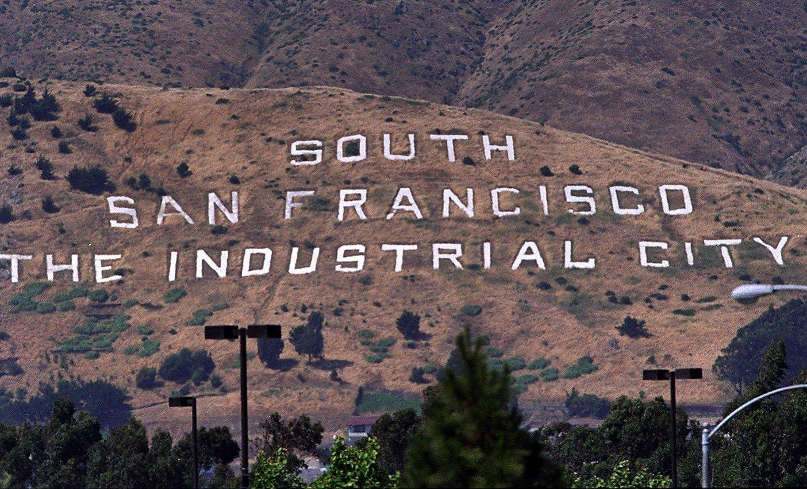
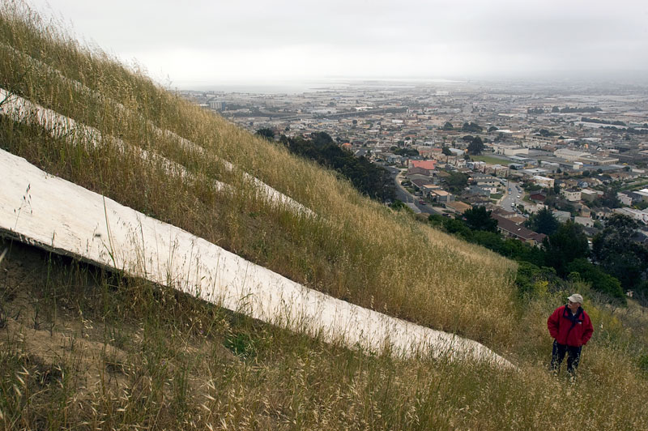
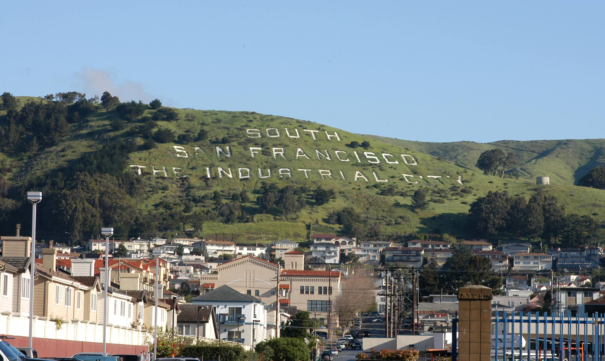

Q1. What are the differences between site specific art work and the idea of art interventions?
Site specific artwork is artwork that is purposely made for that space. Art interventions are art pieces that intervene in spaces that are already being used. Art interventions are art pieces that aren’t originally supposed to be in that space such as public spaces.
Q2. What are the similarities and differences regarding the work of Walter De Maria and Banksy? include your thoughts of on their idea of site specificness and interventions.
Walter De Maria creates art in areas that are more site specific. Maria really wants viewers to experience these art pieces by going to these locations. Many of his works are for his concerns of nature, for example, the Lightning Field and the Earth Room which uses materials of dirt and steel. On the other hand, Banksy intervenes in public spaces and creates work to make people look at the world differently. For example, his art project Dismaland was a pop up exhibition where the works conveyed the issues of immigration, celebrity culture, and law enforcement. His works are very dark and satirical. A lot of Banksy’s art intervenes in public spaces to get a reaction from the public.
Q3. What are some of the most common creative tactics that all the 'signs' must shares? What must sign have to remain relevant? We are talking about signs that both in the practical context as well as signs that function as art.
I think the most creative tactic that ‘signs’ must have is that it must have strong symbols that create a universal language for everyone to understand. An example would be Jane Davis Dogget who helped create wayfinding systems for airports. It really helped people navigate their way through large spaces. Signs must have a context of what the place must be about. The terrain and landscape should have a connection with the sign somehow. The size and dimension must matter in terms of visibility and legibility.
Q4. What Kind of art, not shown here, have you seen that was made in response to its location, its environment, a specific event or situation. Please elaborate on its description, provide images if possible.
  I live by South San Francisco and there’s this sign that overlooks Northbound of 101, part of the San Bruno Mountains. It’s a white concrete sign that says “SOUTH SAN FRANCISCO THE INDUSTRIAL CITY”. Created in the 1920’s, its purpose was to advertise the city's welcoming attitude toward industry. This was made by engineer Geroge A. Kneese. I noticed driving around that area that there’s a lot of automobile shops, bread factories, and other industrial buildings in that area. There’s also a good amount of biotech companies too by Oyster Point. After WWII from transition to heavy industry, light industry, then high tech and biotech companies. This became “the birthplace of Biotechnology.” I can really see how South San Francisco being very industrious in terms of the buildings and how the location looks.